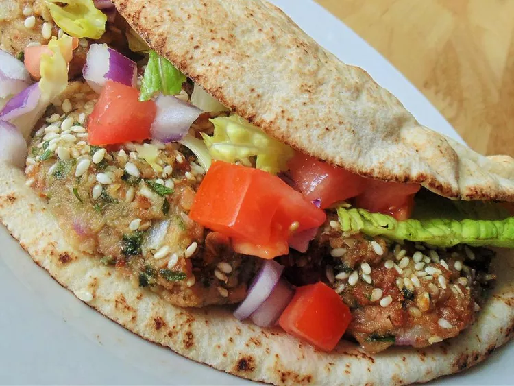

Ta'ameya(Egyptian Falafel)

About The Recipe:
Falafel, or ta'ameya as we call in Egypt, is an all-time favorite street food. In most parts of the Middle East, falafel is made with ground chickpeas. However, in Egypt, we make it with dried fave beans. They are best served with pita bread, tomato, onions, and tahini sauce.
Ingredients:
-
2 cups dried split fave beans
-
1 red onion, quartered
-
1/2 cup fresh parsley
-
1/2 cup fresh cilantro
-
1/2 cup fresh dill
-
3 cloves garlic
-
1 1/2 teaspoons salt
-
1 1/2 teaspoons ground coriander
-
1 teaspoons ground cumin
-
1 cup sesame seeds(Optional)
-
vegetable oil for frying
Directions:
-
Place fave beans in large bowl and cover with several inches of water. Let soak, 8 hours to overnight. Drain.
-
Combine soaked fave beans, red onion, parsley, cilantro, dill, garlic, coriander, salt, and cumin in a food processor; process to a dough-like consistency.
-
Heat a skillet over medium heat. Add sesame seeds;cook, stirring occasionally, until toasted, about 5 minutes. Transfer to a large plate.
-
Shape fave beans mixture into balls. Roll in sesame seeds to coat.
-
Fill a large saucepan 1/4 full with oil;heat over medium heat. Fry fave bean balls in batches until golden brown, 3 to 5 minute. Drain on paper towels.
Cook's Note:
You can substitute half the fave beans with chickpeas if you used to traditional falafel.